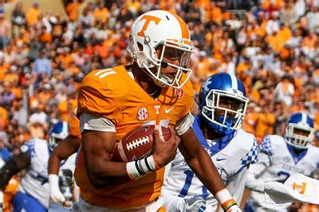
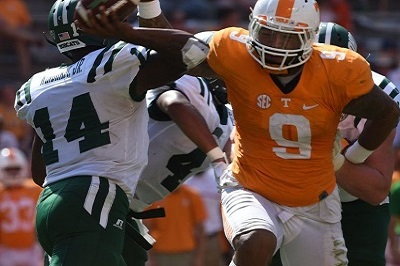
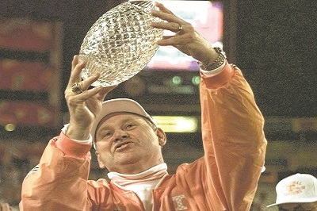
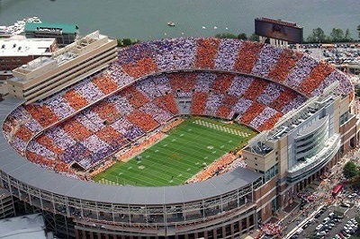

One of my favorite ways to spend a Saturday is by watching my Vols play.I have been a Tennessee Volunteers fan for over 10 years now. The Volunteers possess a rich history and a large amount of awesome traditions. The point of this site is to showcase some of my favorite players and traditions. I have also included some information about our upcoming season. GOOD OLE ROCKYTOP



